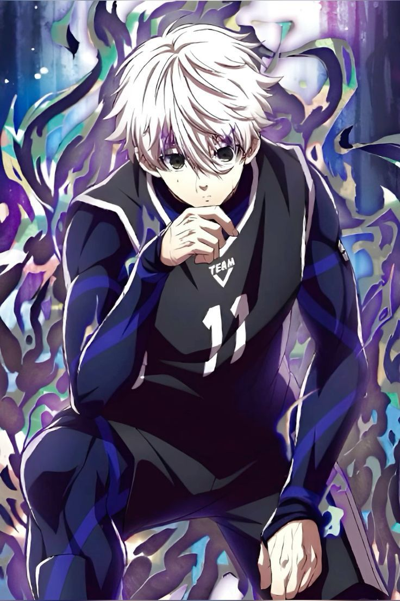

Skills

นางิ เซย์ชิโร่ มีพรสวรรค์ ด้านการตอบสนอง ความเร็ว และทักษะการกระโดดที่น่าทึ่ง แม้ว่าเขาจะไม่เคยเล่นฟุตบอลมาก่อน แต่เขาก็ใช้พรสวรรค์นี้ในการบดขยี้คู่แข่งได้เป็นอย่างดี เขานั้นเรียกได้ว่าเป็นอัจฉริยะโดยที่ไม่ต้องมีการฝึกซ้อม เพราะการครองบอล ส่งบอล ควบคุมการเคลื่อนไหว และการทำประตูของเขา อยู่ในขั้นที่ยอดเยี่ยม เพียงแต่เมื่อเขาพ่ายแพ้ นั่นถือว่าเป็นการปลุกความเก่งที่แท้จริง เมื่อเขาพยายามฝึกซ้อม จนทำให้มีประสิทธิภาพในการใช้งานมากขึ้น